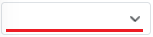
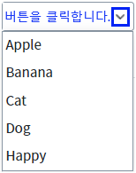
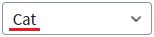

최초 로딩 시 항목을 선택하지 않는 예제입니다. 이 예제는 컴포넌트의 값(value)이 설정되지 않았거나 빈 문자열로 연결(속성 'ref' 설정)된 경우을 대상으로 작성되었습니다. 이 기능은 속성 'emptyItem'의 설정 값을 'true'로 지정하고 속성 'emptyIndex'의 설정을 통해 구현할 수 있습니다.
(유의 사항)
- 속성 'emptyIndex'는 최초 로딩 시에만 적용됩니다. 예를 들어 '1'로 설정 값을 지정했다면 최초 로딩 시 두 번째 항목이 표시됩니다. 이후 스크립트를 통해 항목에 없는 값을 할당하면 빈 항목이 표시됩니다.
- 속성 'emptyItem'이 'false'로 설정되었을 때, 사용자가 직접 값을 입력한 경우에는 속성 'noResult'의 설정 값에 따라 동작됩니다.
- 만약 속성 'ref'를 설정하지 않고 최초 로딩 시에만 빈 항목을 선택하는 경우라면, 속성 'emptyIndex'만 적용하여 구현할 수도 있습니다.
(권장은 속성 'emptyItem'의 설정 값을 'true'로 설정해서 함께 사용하는 것입니다.)
최초 로딩 시 또는 스크립트로 항목 선택하지 않기(빈 항목 표시하기)
STEP 1. 초기 상태 확인하기
영역 [emptyItem="true" emptyIndex="-1"]에 구성된 예제를 확인합니다.
상단에는 기능 테스트를 위한 버튼이 있고 하단에는 버튼을 클릭했을 때 결과 값을 출력하는 로그 확인 영역이 구성되어 있습니다.STEP 2. 실행된 결과를 확인합니다.
최초 로딩 시 'AutoComplete'에 선택된 값이 빈 값(빈 문자열)로 표시됩니다. '로그 확인'에 출력된 로그에 선택된 값과 선택된 인덱스 값이 출력됩니다.
그림 1.브라우저(Chrome) 실행 예시

컴포넌트의 우측에 구성된 버튼(목록 표시)을 클릭하여 목록을 확인합니다. 표시된 목록에는 빈 문자열 항목이 없는 것을 확인합니다.
그림 2.브라우저(Chrome) 실행 예시

STEP 3. 스크립트로 컴포넌트의 값을 빈 문자열로 할당한 경우 확인하기
STEP 3.1. 항목을 선택합니다.
세 번째 항목 'Cat'을 선택합니다.
그림 3.브라우저(Chrome) 실행 예시

STEP 3.2. 스크립트로 컴포넌트의 값을 빈 문자열로 할당합니다.
버튼 1.2 함수 setValue("") 실행하기를 클릭합니다.STEP 3.3. 실행 결과를 확인합니다.
빈 항목이 표시됩니다.
그림 4.브라우저(Chrome) 실행 예시
컴포넌트의 우측에 구성된 버튼(목록 표시)을 클릭하여 목록을 확인합니다. 표시된 목록에는 빈 문자열 항목이 없는 것을 확인합니다.
그림 5.브라우저(Chrome) 실행 예시
영역 [로그 확인]에 출력된 로그를 확인합니다.
(브라우저의 개발자 도구 콘솔에도 로그가 출력됩니다)로그
[11:13:55] # 버튼 [1.2 함수 setValue("") 실행하기] 클릭
선택된 값 :
선택된 인덱스 : -1STEP 4. 스크립트로 컴포넌트의 값을 항목에 없는 값으로 할당한 경우 확인하기
STEP 4.1. 항목을 선택합니다.
세 번째 항목 'Cat'을 선택합니다.
그림 6.브라우저(Chrome) 실행 예시
STEP 4.2. 스크립트로 컴포넌트의 값을 항목에 없는 값으로 할당합니다.
버튼 1.3 목록에 없는 항목 설정하기 - 함수 setValue("NONE") 실행을 클릭합니다.STEP 4.3. 실행 결과를 확인합니다.
빈 항목이 표시됩니다.
그림 7.브라우저(Chrome) 실행 예시
컴포넌트의 우측에 구성된 버튼(목록 표시)을 클릭하여 목록을 확인합니다. 표시된 목록에는 빈 문자열 항목이 없는 것을 확인합니다.
그림 8.브라우저(Chrome) 실행 예시
영역 [로그 확인]에 출력된 로그를 확인합니다.
(브라우저의 개발자 도구 콘솔에도 로그가 출력됩니다)로그
[11:27:55] # 버튼 [1.3 목록에 없는 항목 설정하기 - 함수 setValue("NONE") 실행] 클릭
선택된 값 :
선택된 인덱스 : -1속성을 정의합니다.
[필수] emptyIndex
[default: 0] 최초 브라우저에 구성 때 선택할 항목의 인덱스를 지정합니다. 설정 값이 "-1"이면 빈 항목이 선택되며, 속성 'emptyItem'을 "true"로 설정해야 선택 값이 빈 문자열로 적용됩니다.
[필수] emptyItem
함수(setValue 등)를 호출하여 선택 항목에 없는 value나 index가 설정된 경우 동작 방식을 설정합니다.
제시된 옵션 값으로 설정합니다.
(옵션 값)
- "false" : [default] 첫 번째 항목이 선택됩니다. 속성 'noResult'의 설정 값은 무시됩니다.
- "true" : 빈 항목(label과 value가 빈 문자열로 적용)이 선택됩니다. 속성 'noResult'의 설정 값은 'clear'로 적용됩니다.
emptyIndex
emptyItem
setValue
getValue
getSelectedIndex